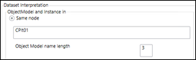
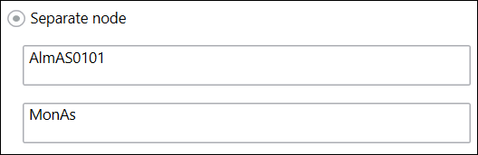

Defining ObjectModels and Device Instances
- A filtered dataset is present.
- Perform either of the following to create the object model and device instances in the Dataset Interpretation section.
- Select the Same node option, if you want to the object model and device instance to have the same name. Drag-and-drop the dataset node from the System Browser to the Same node field. Specify the length of the object model in Object Model name length. The name of object model will be set according to the number of characters specified. The device instance will be created with the complete node name. For example, if the name of the dropped node is CPlt01 and the specified length is 3, then the object model name will be CPl and the name of the device instance will be CPlt01.

- Select Separate node, if you want the object model and device instances to have different names. Drag-and-drop a dataset node from the System Browser that you want to set as the object model name to the first text field and the node to be set as the name of the device instance in the second text field. For example, if you add the nodes, AlmAS0101 to the first text field and MonAs to the second text field, then the Object Model will be created with the name AlmAS0101 and the device instance will be created with MonAs as the name.
